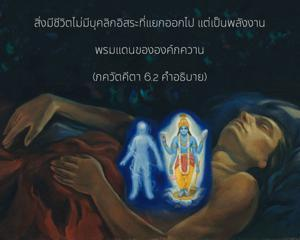
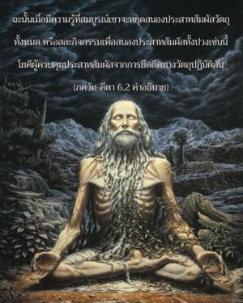

เธอควรรู้ว่าสิ่งที่เรียกว่าการเสียสละเป็นสิ่งเดียวกับโยคะ หรือการเชื่อมสัมพันธ์ตนเองกับองค์ภควานฺ โอ้ โอรสแห่ง ปาณฺฑุ ไม่มีผู้ใดสามารถเป็นโยคีได้นอกจากว่าเขาผู้นั้นจะสละความต้องการเพื่อสนองประสาทสัมผัส


สนฺนฺยาส-โยค หรือ ภกฺติ ที่แท้จริงหมายความว่า เขาควรรู้สถานภาพพื้นฐานของตนในฐานะที่เป็นสิ่งมีชีวิตและควรปฏิบัติตามนั้น สิ่งมีชีวิตไม่มีบุคลิกอิสระที่แยกออกไปแต่เป็นพลังงานพรมแดนขององค์ภควานฺ เมื่อถูกกักขังโดยพลังงานวัตถุเขาจึงอยู่ในสภาวะวัตถุ และเมื่อมีกฺฤษฺณจิตสำนึกหรือตระหนักถึงพลังงานทิพย์ตอนนั้นเขาอยู่ในระดับธรรมชาติที่แท้จริงของชีวิต ฉะนั้นเมื่อมีความรู้ที่สมบูรณ์เขาจะหยุดสนองประสาทสัมผัสวัตถุทั้งหมด หรือสละกิจกรรมเพื่อสนองประสาทสัมผัสทั้งปวงเช่นนี้ โยคีผู้ควบคุมประสาทสัมผัสจากการยึดติดทางวัตถุปฏิบัติกัน แต่บุคคลในกฺฤษฺณจิตสำนึกไม่มีโอกาสที่จะใช้ประสาทสัมผัสของตนไปในสิ่งอื่นใดที่ไม่ใช่จุดมุ่งหมายขององค์กฺฤษฺณ ดังนั้นบุคคลผู้มีกฺฤษฺณจิตสำนึกเป็นทั้ง สนฺนฺยาสี และโยคีในเวลาเดียวกัน จุดมุ่งหมายของความรู้และการควบคุมประสาทสัมผัส ดังที่ได้อธิบายในวิธีการ ชฺญาน และโยคะก็บรรลุถึงได้โดยปริยายในกฺฤษฺณจิตสำนึก หากผู้ใดไม่สามารถยกเลิกกิจกรรมแห่งธรรมชาติความเห็นแก่ตัวของตนเอง ชฺญาน และโยคะก็ไม่มีประโยชน์อันใด จุดมุ่งหมายที่แท้จริงคือเพื่อให้สิ่งมีชีวิตยกเลิกความพึงพอใจที่เห็นแก่ตัวทั้งหมด และเตรียมตัวเพื่อให้องค์ภควานฺทรงพอพระทัย บุคคลผู้มีกฺฤษฺณจิตสำนึกไม่มีความปรารถนาเพื่อความสุขส่วนตัวใดๆทั้งสิ้น เขาจะปฏิบัติตนเพื่อความสุขขององค์ภควานฺอยู่เสมอ ฉะนั้นผู้ที่ไม่มีข้อมูลความรู้ขององค์ภควานฺจึงต้องปฏิบัติเพื่อความพึงพอใจของตนเอง เพราะว่าไม่มีผู้ใดสามารถยืนหยัดอยู่ในระดับที่ไร้กิจกรรมได้ จุดมุ่งหมายทั้งหมดบรรลุได้โดยสมบูรณ์ด้วยการปฏิบัติกฺฤษฺณจิตสำนึก